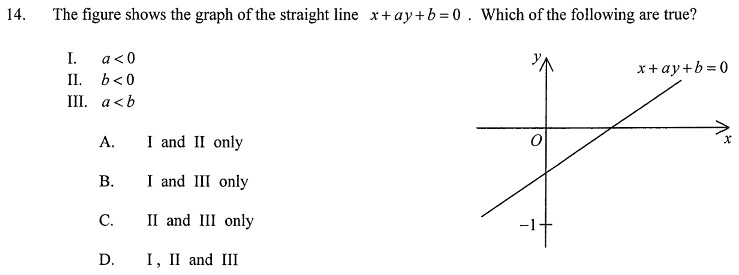

Make $y$ the subject of $x+ay+b=0$:
$$ay=-x-b \quad\Longrightarrow\quad y=-\frac{1}{a}\,x-\frac{b}{a}$$So the slope is $m=-\dfrac{1}{a}$ and the $y$-intercept is $-\dfrac{b}{a}$. The $x$-intercept comes from $y=0$: $x=-b$.
From the graph, the line rises from left to right, so the slope is positive:
$$-\frac{1}{a}>0 \quad\Longrightarrow\quad \frac{1}{a}<0 \quad\Longrightarrow\quad a<0$$✓ Statement I is true.
The $x$-intercept is $x=-b$ and it lies to the right of $O$, so $-b>0$:
$$-b>0 \quad\Longrightarrow\quad b<0$$✓ Statement II is true.
From the graph, the $y$-intercept is above the level $y=-1$:
$$-\frac{b}{a}>-1$$Multiply both sides by $a$, and since $a<0$ the inequality reverses:
$$-b<-a \quad\Longrightarrow\quad -b+a<0 \quad\Longrightarrow\quad a